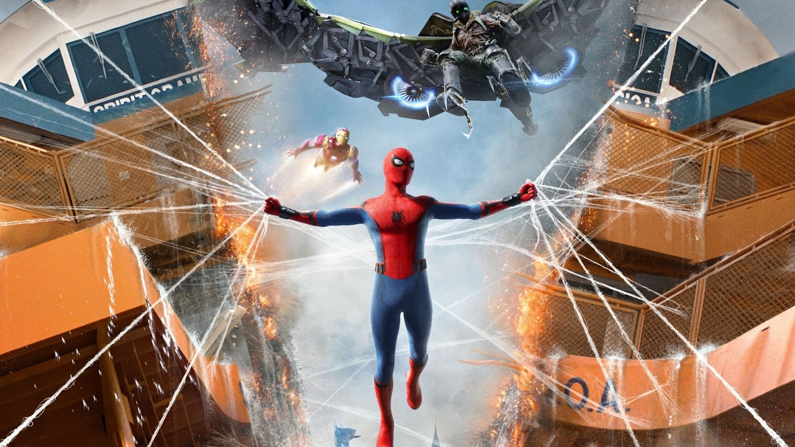
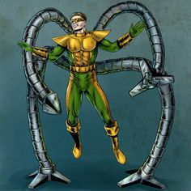
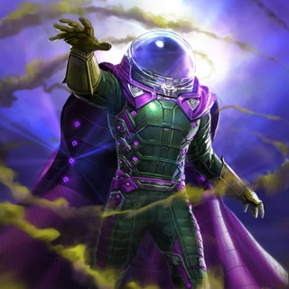
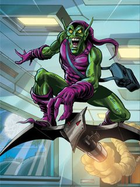
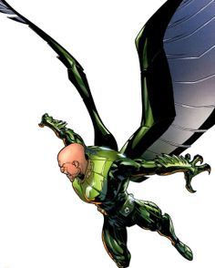
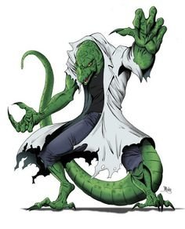

Человек-паук
Челове́к-пау́к (англ. Spider-Man), настоящее имя Пи́тер Па́ркер (англ. Peter Parker) — супергерой, появляющийся
в комиксах издательства Marvel Comics, созданный Стэном Ли и Стивом Дитко. С момента своего первого появления
на страницах комикса Amazing Fantasy № 15 (рус. Удивительная фантазия, август 1962) он стал одним из самых
популярных супергероев. Ли и Дитко задумывали персонажа как подростка-сироту, воспитанного дядей и тётей,
совмещающего жизнь обычного студента и борца с преступностью. Человек-паук получил суперсилу, увеличенную
ловкость, «паучье чутьё», а также способность держаться на отвесных поверхностях и выпускать паутину из рук с
использованием прибора собственного изобретения. До появления Человека-паука в 1960-х подростки в комиксах о
супергероях обычно были всего лишь их помощниками. Комиксы о Человеке-пауке разбили эти стереотипы, представив
героем одинокого подростка, отвергаемого многими сверстниками, у которого не было опытного наставника, как
Капитан Америка у Баки или Бэтмен у Робина. После смерти своего дяди Бена ему пришлось самостоятельно узнавать,
что «с большой силой приходит и большая ответственность» (англ. With great power there must also come great
responsibility).
Marvel выпустила множество серий комиксов о Человеке-пауке. Самая первая из них — The
Amazing Spider-Man (рус. Удивительный Человек-паук), выход которой продолжается до сих пор. За годы своего
существования Питер Паркер был то робким учеником средней школы, то проблемным студентом колледжа, то женатым
учителем, то главой мультимиллиардной компании, а также членом нескольких команд супергероев, таких как
Мстители, Новые Мстители, Фантастическая четвёрка.
Наиболее характерным образом Питера Паркера вне жизни
Человека-паука является образ независимого фотографа, который использовался в комиксах на протяжении многих
лет.Человек-паук является одним из самых популярных и коммерчески успешных супергероев. С увеличением своей
популярности Человек-паук вышел за пределы комиксов, стал появляться на телевидении, в видеоиграх и
кинофильмах. В разное время его играли актёры Тоби
Магуайр(трилогия Сэма Рэйми),Эндрю Гарфилд(дилогия Марка
Уэбба),Том Холланд(«Первый
мститель: Противостояние» и последующие фильмы в рамках кинематографической вселенной Marvel)
Характеристики персонажа
- Позиция - Добро
- Полное имя - Питер Бенджамин Паркер
- Псевдонимы:
- Рикошет
- Сумрак
- Продиджи
- Шершень
- Алый Паук
- Дружелюбный сосед
- Вид - Генетически изменённый человек
- Рост - 178 см
- Вес - 76 кг
- Семейное положение - Был женат на Мэри Джейн Уотсон
- Род занятий Супергерой, школьник, студент, учитель, фотограф

Особые силы
- Сверхчеловеческие рефлексы
- Cила, скорость, прыжки в высоту и в длину 10 метров
- Ускоренный метаболизм
- Способность прилипать к твёрдым поверхностям
«Паучье чутьё»
- Владение боевыми искусствам
- Гениальный интеллект (IQ - 250)
Враги
В сериях о Человеке-пауке фигурируют одни из самых известных вымышленных злодеев в американских комиксах.
Как и сам Человек-паук, большинство из них получили способности в результате несчастного случая, аварии,
ошибочного использования научных технологий или после экспериментов с животными, образы которых отражены в
тематике их костюма (например, Ящер, который ввёл себе ДНК ящерицы). В первых выпусках Человек-паук
столкнулся с такими суперзлодеями как Хамелеон, Стервятник, Доктор Осьминог, Песочный человек, Ящер ,
Электро , Мистерио, Зелёный гоблин , Крейвен-охотник, Скорпион, Принцесса Питон , Носорог(первый злодей,
созданный Стэном Ли совместно с Джоном Ромитой-старшим), Шокер и криминальный босс крупного телосложения
Уилсон Фиск, известный также как Кингпин № 50, июль 1967). В сюжете Сага о клонах один из второстепенных
персонажей по имени Майлз Уоррен превратился в злодея Шакала — одного из антагонистов сюжетной линии. В 122
номере Норман Озборн (Зелёный гоблин) был убит Человеком-пауком. В № 238 его заменил злодей по имени
Хобгоблин до того, как персонаж Нормана был пересмотрен и возвращён в сюжет. После того, как Человек-паук
появился в чёрном костюме, был введён ещё один новый злодей — Эдди Брок, также известный как Веном (№
299—300, май 1988), который иногда был союзником Человека-паука в схватках с симбиотом по имени Карнаж.
Время от времени злодеи собираются в группы вроде Зловещей шестёрки (основана Доктором Осьминогом), чтобы
одолеть Человека-паука. Его главными врагами считаются Доктор Осьминог, Зелёный Гоблин и Веном. Кроме
отрицательных персонажей отдельных серий о Человеке-пауке, он неоднократно сталкивался с другими злодеями,
которые изначально фигурировали в других сериях комиксов Marvel, например о Фантастической четвёрке, когда
Человек-паук был в составе команды.

Доктор Осьминог

Мистерио

Зеленый Гоблин

Стервятник

Ящер